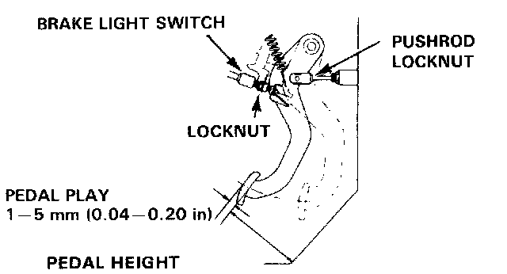
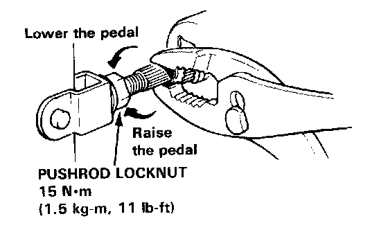
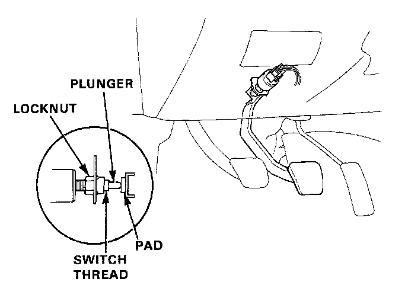

Brake Pedal Assy: Adjustments
Pedal Height Adjustment
1. Loosen the brake light switch locknut and back off the brake light switch until it is no longer touching the brake pedal.
PEDAL HEIGHT
MANUAL TRANSMISSION: 155 mm (6.10 in.)
AUTOMATIC TRANSMISSION: 160 mm (6.30 in.)
Measure without floormat.

2. Loosen the pushrod locknut and screw the pushrod in or out with pliers until the pedal height from the floor is properly adjusted. After adjustment, tighten the locknut firmly.

3. Screw in the brake light switch until its plunger is fully depressed (threaded end touching pad on pedal arm). Then back off switch 1/2 turn and tighten locknut firmly
CAUTION: Check that the brake lights go off when the pedal is released.